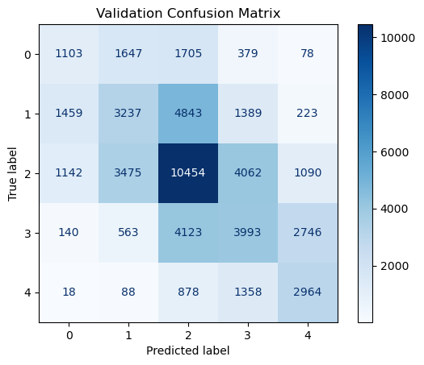
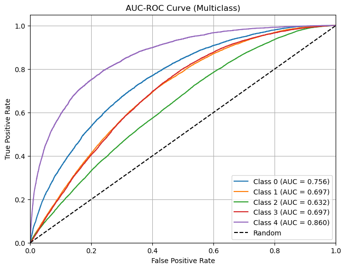

Naive Bayes#
# ============================
# IMPORTS
# ============================
import os
import time
import joblib
import numpy as np
import pandas as pd
import matplotlib.pyplot as plt
import plotly.graph_objects as go
import random
import plotly.express as px
from tqdm import tqdm
from imblearn.pipeline import Pipeline
from sklearn.compose import ColumnTransformer
from sklearn.impute import SimpleImputer
from sklearn.preprocessing import OneHotEncoder, StandardScaler, label_binarize
from sklearn.naive_bayes import MultinomialNB
from sklearn.utils.class_weight import compute_sample_weight
from sklearn.model_selection import StratifiedKFold, train_test_split
from sklearn.metrics import (
f1_score, classification_report, confusion_matrix, ConfusionMatrixDisplay,
accuracy_score, log_loss, roc_auc_score, roc_curve, auc
)
from sklearn.naive_bayes import MultinomialNB
from sklearn.preprocessing import MinMaxScaler
from imblearn.over_sampling import SMOTE
import optuna
from optuna.pruners import MedianPruner
from sklearn.preprocessing import LabelEncoder
from reporte_metricas import ReporteMetricas
reporte = ReporteMetricas()
SEED = 42
random.seed(SEED)
np.random.seed(SEED)
optuna.logging.set_verbosity(optuna.logging.WARNING)
/Users/sergiosilveramurcia/Conda/miniconda3/envs/MachineLearning/lib/python3.9/site-packages/tqdm/auto.py:21: TqdmWarning: IProgress not found. Please update jupyter and ipywidgets. See https://ipywidgets.readthedocs.io/en/stable/user_install.html
from .autonotebook import tqdm as notebook_tqdm
# =======================
# LOAD DATA
# =======================
file_path = "../Datos_Saber_Pro_Preprocesed.csv"
df = pd.read_csv(file_path)
df.head(5000)
X = df.drop(columns=["MOD_INGLES_DESEM"])
y = df["MOD_INGLES_DESEM"]
categorical_features = X.select_dtypes(include='object').columns.tolist()
numeric_features = X.select_dtypes(include=['int64', 'float64']).columns.tolist()
le = LabelEncoder()
y = pd.Series(le.fit_transform(y), index=y.index)
class_mapping = dict(zip(le.classes_, le.transform(le.classes_)))
print("Class mapping:", class_mapping)
Class mapping: {'-A1': np.int64(0), 'A1': np.int64(1), 'A2': np.int64(2), 'B1': np.int64(3), 'B2': np.int64(4)}
# # ============================
# # PATHS CONFIGURADOS PARA GUARDADO DE OBJETOS
# # ============================
model_filename = "../Models/best_NB_model.pkl"
metrics_filename = "../Models/best_NB_metrics.pkl"
fold_metrics_filename = "./Metrics/NB_folds_summary.csv"
# ============================
# EVALUATION FUNCTION
# ============================
def evaluate_model(model, X_data, y_data):
y_pred = model.predict(X_data)
y_proba = model.predict_proba(X_data)
f1 = f1_score(y_data, y_pred, average='weighted')
acc = accuracy_score(y_data, y_pred)
loss = log_loss(y_data, y_proba)
auc = roc_auc_score(y_data, y_proba, multi_class='ovr', average='weighted')
report = classification_report(y_data, y_pred)
cm = confusion_matrix(y_data, y_pred)
return f1, acc, loss, auc, report, cm, y_proba, y_pred
def build_pipeline(params, numeric_features, categorical_features):
# Preprocesamiento por tipo de variable
preprocessor = ColumnTransformer([
('num', Pipeline([
('imputer', SimpleImputer(strategy='median')),
('scaler', MinMaxScaler())
]), numeric_features),
('cat', Pipeline([
('imputer', SimpleImputer(strategy='constant', fill_value='Sin Dato')),
('ohe', OneHotEncoder(handle_unknown='ignore', sparse_output=False))
]), categorical_features)
],
verbose_feature_names_out=False
)
# Pipeline con SMOTE incluido
model = Pipeline([
('preprocessor', preprocessor),
('smote', SMOTE(random_state=SEED)),
('classifier', MultinomialNB(**params))
])
return model
# ============================
# FOLD METRIC SAVER
# ============================
def save_metrics_folds(folds_metrics: list, filename: str) -> pd.DataFrame:
df = pd.DataFrame(folds_metrics)
metric_cols = df.columns.drop('fold') if 'fold' in df.columns else df.columns
mean_row = df[metric_cols].mean().to_dict()
std_row = df[metric_cols].std().to_dict()
mean_row['fold'] = 'mean'
std_row['fold'] = 'std'
df_final = pd.concat([df, pd.DataFrame([mean_row, std_row])], ignore_index=True)
df_final.to_csv(filename, index=False)
print(f"\n📁 Fold metrics + summary saved to: {filename}")
return df_final
# ============================
# CONFUSION MATRIX PLOTTER
# ============================
def plot_confusion_matrix(cm, labels, title):
disp = ConfusionMatrixDisplay(confusion_matrix=cm, display_labels=labels)
disp.plot(cmap="Blues", values_format="d")
plt.title(title)
plt.show()
# ============================
# OPTUNA INNER CV OPTIMIZATION
# ============================
def run_inner_optuna(X_inner, y_inner, numeric_features, categorical_features, n_trials=3):
def objective(trial):
params = {"alpha": trial.suggest_float("alpha", 1e-3, 10.0, log=True)}
model = build_pipeline(params, numeric_features, categorical_features)
skf = StratifiedKFold(n_splits=2, shuffle=True, random_state=SEED)
scores = []
for train_idx, val_idx in skf.split(X_inner, y_inner):
X_t, X_v = X_inner.iloc[train_idx], X_inner.iloc[val_idx]
y_t, y_v = y_inner.iloc[train_idx], y_inner.iloc[val_idx]
model.fit(X_t, y_t)
y_pred = model.predict(X_v)
scores.append(f1_score(y_v, y_pred, average='weighted'))
return np.mean(scores)
study = optuna.create_study(direction="maximize", pruner=MedianPruner())
study.optimize(objective, n_trials=n_trials)
return study.best_params, study
# ============================
# NESTED CV
# ============================
def nested_cv(X: pd.DataFrame, y: pd.Series, numeric_features: list, categorical_features: list):
all_folds_metrics = []
if os.path.exists(model_filename) and os.path.exists(metrics_filename):
best_model = joblib.load(model_filename)
best_metrics = joblib.load(metrics_filename)
return best_model, best_metrics
optuna_studies = []
outer_cv = StratifiedKFold(n_splits=2, shuffle=True, random_state=SEED)
best_f1 = -np.inf
best_model = None
best_metrics = {}
for fold, (train_idx, test_idx) in tqdm(enumerate(outer_cv.split(X, y), 1), total=outer_cv.get_n_splits(), desc="Training folds"):
X_train_fold, X_test_fold = X.iloc[train_idx], X.iloc[test_idx]
y_train_fold, y_test_fold = y.iloc[train_idx], y.iloc[test_idx]
X_tr, X_val, y_tr, y_val = train_test_split(
X_train_fold, y_train_fold, test_size=0.2, stratify=y_train_fold, random_state=SEED
)
start_time = time.time()
best_params, study = run_inner_optuna(X_tr, y_tr, numeric_features, categorical_features)
elapsed = time.time() - start_time
optuna_studies.append(study)
model = build_pipeline(best_params, numeric_features, categorical_features)
model.fit(X_tr, y_tr)
f1_train, acc_train, loss_train, auc_train, report_train, cm_train, y_proba_train, y_train_pred = evaluate_model(model, X_tr, y_tr)
f1_val, acc_val, loss_val, auc_val, report_val, cm_val, y_proba_val, y_val_pred = evaluate_model(model, X_val, y_val)
f1_test, acc_test, loss_test, auc_test, report_test, cm_test, y_proba_test, y_test_pred = evaluate_model(model, X_test_fold, y_test_fold)
fold_metrics = {
"fold": fold,
"f1_train": f1_train,
"accuracy_train": acc_train,
"log_loss_train": loss_train,
"auc_train": auc_train,
"f1_val": f1_val,
"accuracy_val": acc_val,
"log_loss_val": loss_val,
"auc_val": auc_val,
"f1_test": f1_test,
"accuracy_test": acc_test,
"log_loss_test": loss_test,
"auc_test": auc_test,
"optuna_time": elapsed
}
all_folds_metrics.append(fold_metrics)
if f1_test > best_f1:
best_f1 = f1_test
best_model = model
best_metrics = {
**fold_metrics,
"params": best_params,
"labels": np.unique(y),
"best_fold": fold - 1,
"X_train_fold": X_tr,
"y_train_fold": y_tr,
"y_train_pred": y_train_pred,
"y_train_true": y_tr,
"y_proba_train": y_proba_train,
"classification_report_train": report_train,
"confusion_matrix_train": cm_train,
"y_val_true": y_val,
"y_val_pred": y_val_pred,
"y_proba_val": y_proba_val,
"classification_report_val": report_val,
"confusion_matrix_val": cm_val,
"y_test_fold": y_test_fold,
"y_test_pred": y_test_pred,
"y_proba_test": y_proba_test,
"classification_report_test": report_test,
"confusion_matrix_test": cm_test
}
joblib.dump(best_model, model_filename)
joblib.dump(best_metrics, metrics_filename)
df_folds = save_metrics_folds(all_folds_metrics, fold_metrics_filename)
return best_model, best_metrics
model, metrics = nested_cv(X, y, numeric_features, categorical_features)
model
Pipeline(steps=[('preprocessor',
ColumnTransformer(transformers=[('num',
Pipeline(steps=[('imputer',
SimpleImputer(strategy='median')),
('scaler',
MinMaxScaler())]),
[]),
('cat',
Pipeline(steps=[('imputer',
SimpleImputer(fill_value='Sin '
'Dato',
strategy='constant')),
('ohe',
OneHotEncoder(handle_unknown='ignore',
sparse_output=False))]),
['FAMI_ESTRATOVIVIENDA',...
'INST_ORIGEN', 'ESTU_GENERO',
'ESTU_NACIONALIDAD',
'ESTU_HORASSEMANATRABAJA',
'ESTU_PAGOMATRICULABECA',
'ESTU_PAGOMATRICULACREDITO',
'ESTU_PAGOMATRICULAPADRES',
'ESTU_PAGOMATRICULAPROPIO',
'ESTU_DEPTO_RESIDE',
'ESTU_DEPTO_PRESENTACION'])],
verbose_feature_names_out=False)),
('smote', SMOTE(random_state=42)),
('classifier',
MultinomialNB(alpha=9.578685174118897, force_alpha='warn'))])In a Jupyter environment, please rerun this cell to show the HTML representation or trust the notebook. On GitHub, the HTML representation is unable to render, please try loading this page with nbviewer.org.
Pipeline(steps=[('preprocessor',
ColumnTransformer(transformers=[('num',
Pipeline(steps=[('imputer',
SimpleImputer(strategy='median')),
('scaler',
MinMaxScaler())]),
[]),
('cat',
Pipeline(steps=[('imputer',
SimpleImputer(fill_value='Sin '
'Dato',
strategy='constant')),
('ohe',
OneHotEncoder(handle_unknown='ignore',
sparse_output=False))]),
['FAMI_ESTRATOVIVIENDA',...
'INST_ORIGEN', 'ESTU_GENERO',
'ESTU_NACIONALIDAD',
'ESTU_HORASSEMANATRABAJA',
'ESTU_PAGOMATRICULABECA',
'ESTU_PAGOMATRICULACREDITO',
'ESTU_PAGOMATRICULAPADRES',
'ESTU_PAGOMATRICULAPROPIO',
'ESTU_DEPTO_RESIDE',
'ESTU_DEPTO_PRESENTACION'])],
verbose_feature_names_out=False)),
('smote', SMOTE(random_state=42)),
('classifier',
MultinomialNB(alpha=9.578685174118897, force_alpha='warn'))])ColumnTransformer(transformers=[('num',
Pipeline(steps=[('imputer',
SimpleImputer(strategy='median')),
('scaler', MinMaxScaler())]),
[]),
('cat',
Pipeline(steps=[('imputer',
SimpleImputer(fill_value='Sin '
'Dato',
strategy='constant')),
('ohe',
OneHotEncoder(handle_unknown='ignore',
sparse_output=False))]),
['FAMI_ESTRATOVIVIENDA', 'FAMI_TIENEAUTOMOVIL',
'FAMI_TIEN...
'FAMI_EDUCACIONMADRE', 'ESTU_NUCLEO_PREGRADO',
'ESTU_METODO_PRGM',
'ESTU_VALORMATRICULAUNIVERSIDAD',
'INST_CARACTER_ACADEMICO', 'INST_ORIGEN',
'ESTU_GENERO', 'ESTU_NACIONALIDAD',
'ESTU_HORASSEMANATRABAJA',
'ESTU_PAGOMATRICULABECA',
'ESTU_PAGOMATRICULACREDITO',
'ESTU_PAGOMATRICULAPADRES',
'ESTU_PAGOMATRICULAPROPIO',
'ESTU_DEPTO_RESIDE',
'ESTU_DEPTO_PRESENTACION'])],
verbose_feature_names_out=False)[]
SimpleImputer(strategy='median')
MinMaxScaler()
['FAMI_ESTRATOVIVIENDA', 'FAMI_TIENEAUTOMOVIL', 'FAMI_TIENECOMPUTADOR', 'FAMI_TIENEINTERNET', 'FAMI_TIENELAVADORA', 'FAMI_EDUCACIONPADRE', 'FAMI_EDUCACIONMADRE', 'ESTU_NUCLEO_PREGRADO', 'ESTU_METODO_PRGM', 'ESTU_VALORMATRICULAUNIVERSIDAD', 'INST_CARACTER_ACADEMICO', 'INST_ORIGEN', 'ESTU_GENERO', 'ESTU_NACIONALIDAD', 'ESTU_HORASSEMANATRABAJA', 'ESTU_PAGOMATRICULABECA', 'ESTU_PAGOMATRICULACREDITO', 'ESTU_PAGOMATRICULAPADRES', 'ESTU_PAGOMATRICULAPROPIO', 'ESTU_DEPTO_RESIDE', 'ESTU_DEPTO_PRESENTACION']
SimpleImputer(fill_value='Sin Dato', strategy='constant')
OneHotEncoder(handle_unknown='ignore', sparse_output=False)
SMOTE(random_state=42)
MultinomialNB(alpha=9.578685174118897, force_alpha='warn')
print(metrics['classification_report_val'])
precision recall f1-score support
0 0.29 0.22 0.25 4912
1 0.36 0.29 0.32 11151
2 0.48 0.52 0.50 20223
3 0.36 0.35 0.35 11565
4 0.42 0.56 0.48 5306
accuracy 0.41 53157
macro avg 0.38 0.39 0.38 53157
weighted avg 0.40 0.41 0.40 53157
plot_confusion_matrix(metrics['confusion_matrix_val'], metrics['labels'], "Validation Confusion Matrix")

print(metrics['classification_report_test'])
precision recall f1-score support
0 0.30 0.23 0.26 6139
1 0.36 0.30 0.33 13939
2 0.47 0.52 0.49 25278
3 0.36 0.35 0.35 14456
4 0.42 0.56 0.48 6633
accuracy 0.41 66445
macro avg 0.38 0.39 0.38 66445
weighted avg 0.40 0.41 0.40 66445
plot_confusion_matrix(metrics['confusion_matrix_test'], metrics['labels'], "Test Confusion Matrix")
reporte.save(metrics, model_name="NB")
✅ Report for model 'NB' saved:
→ CSV: ./Metrics/Metrics_NB.csv
→ JSON: ./Metrics/Metrics_NB.json
def plot_roc_multiclass(y_true, y_proba, class_labels, title="AUC-ROC Curve (Multiclass)"):
# Binarize true labels
y_bin = label_binarize(y_true, classes=class_labels)
n_classes = len(class_labels)
fpr = dict()
tpr = dict()
roc_auc = dict()
for i in range(n_classes):
fpr[i], tpr[i], _ = roc_curve(y_bin[:, i], y_proba[:, i])
roc_auc[i] = auc(fpr[i], tpr[i])
# Plot
plt.figure(figsize=(8, 6))
for i in range(n_classes):
plt.plot(fpr[i], tpr[i],
label=f"Class {class_labels[i]} (AUC = {roc_auc[i]:.3f})")
plt.plot([0, 1], [0, 1], "k--", label="Random")
plt.xlim([0.0, 1.0])
plt.ylim([0.0, 1.05])
plt.xlabel("False Positive Rate")
plt.ylabel("True Positive Rate")
plt.title(title)
plt.legend(loc="lower right")
plt.grid(True)
plt.show()
plot_roc_multiclass(
y_true=metrics["y_test_fold"],
y_proba=metrics["y_proba_test"],
class_labels=metrics["labels"]
)

model.named_steps['classifier'].get_params()
{'alpha': 9.578685174118897,
'class_prior': None,
'fit_prior': True,
'force_alpha': 'warn'}
df = pd.read_csv(fold_metrics_filename)
df
| fold | f1_train | accuracy_train | log_loss_train | auc_train | f1_val | accuracy_val | log_loss_val | auc_val | f1_test | accuracy_test | log_loss_test | auc_test | optuna_time | |
|---|---|---|---|---|---|---|---|---|---|---|---|---|---|---|
| 0 | 1 | 0.403 | 0.409 | 1.557 | 0.694 | 0.404 | 0.411 | 1.562 | 0.692 | 0.399 | 0.406 | 1.562 | 0.692 | 1015.816 |
| 1 | 2 | 0.404 | 0.410 | 1.555 | 0.694 | 0.402 | 0.408 | 1.552 | 0.693 | 0.402 | 0.409 | 1.565 | 0.692 | 995.679 |
| 2 | 3 | 0.403 | 0.410 | 1.558 | 0.694 | 0.401 | 0.407 | 1.559 | 0.692 | 0.401 | 0.407 | 1.551 | 0.694 | 1146.019 |
| 3 | 4 | 0.402 | 0.408 | 1.558 | 0.693 | 0.401 | 0.407 | 1.556 | 0.692 | 0.401 | 0.407 | 1.562 | 0.693 | 993.316 |
| 4 | 5 | 0.402 | 0.409 | 1.554 | 0.693 | 0.403 | 0.409 | 1.554 | 0.694 | 0.405 | 0.411 | 1.551 | 0.694 | 989.373 |
| 5 | mean | 0.403 | 0.409 | 1.556 | 0.694 | 0.402 | 0.409 | 1.556 | 0.693 | 0.402 | 0.408 | 1.558 | 0.693 | 1028.041 |
| 6 | std | 0.001 | 0.001 | 0.002 | 0.000 | 0.001 | 0.001 | 0.004 | 0.001 | 0.002 | 0.002 | 0.007 | 0.001 | 66.739 |